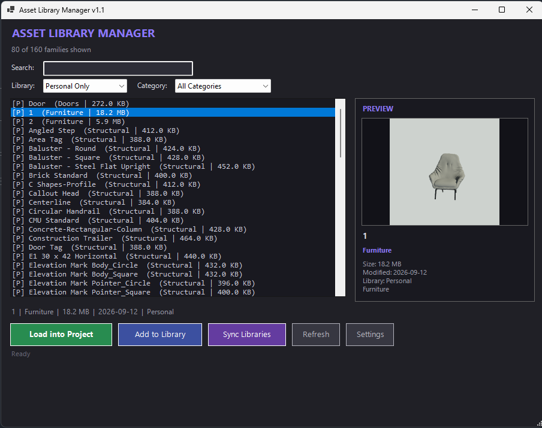

01
RevitVault — Asset Library Manager
A pyRevit tool that turns a folder of Revit families into a searchable personal or shared library. Search and filter by category, preview a family before loading it, and sync libraries across machines so a team pulls from the same set of standard components instead of re-modeling them per project.
